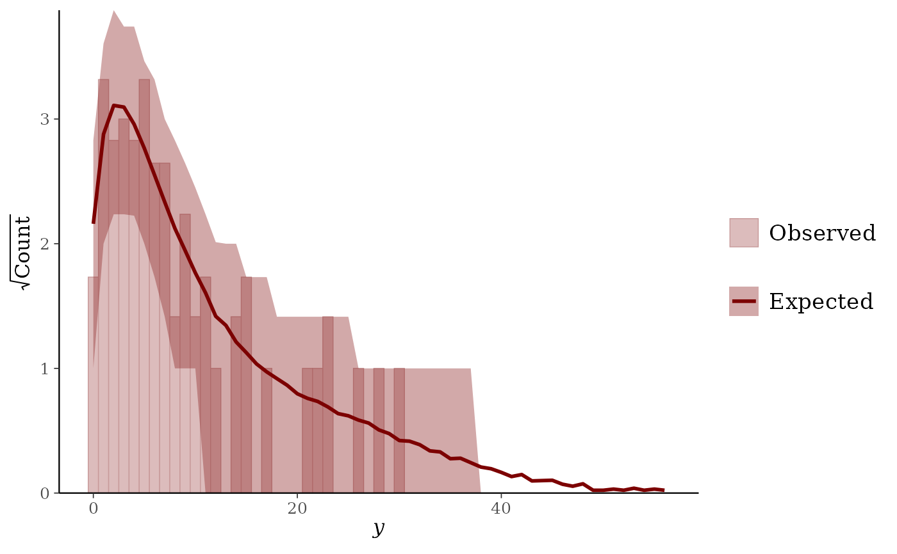
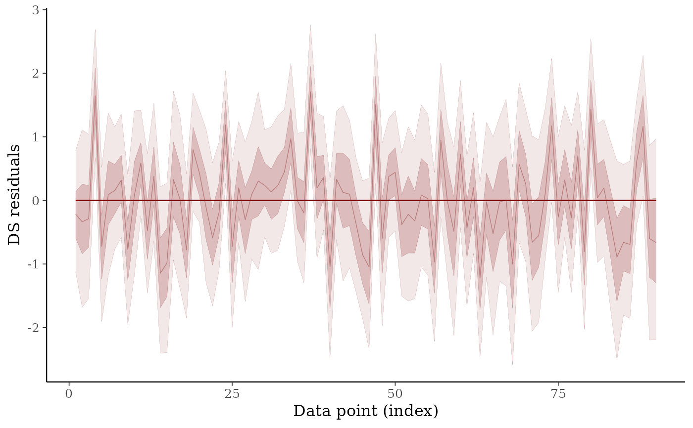
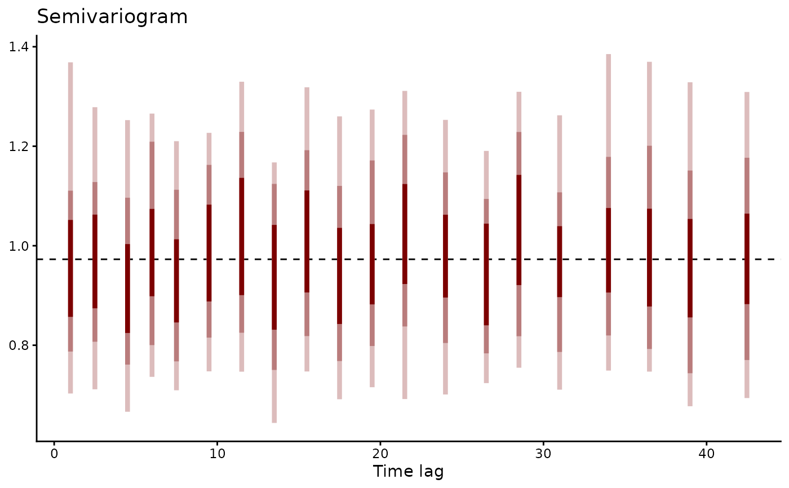

Compares the observed response with replicates drawn from the fitted
model through the bayesplot ppc_* functions. Further types
plot randomised quantile residuals and, for nmix() and occ()
fits, a discrepancy statistic. Returns a ggplot2 object.
Usage
# S3 method for mvgam
pp_check(
object,
type,
ndraws = NULL,
prefix = c("ppc", "ppd"),
group = NULL,
x = NULL,
newdata = NULL,
resp = NULL,
draw_ids = NULL,
per_obs = TRUE,
series = NULL,
...
)Arguments
- object
An object of class
mvgam- type
Type of the check. A bayesplot
ppc_*orppd_*function named without its prefix, or one of the residual types mvgam adds:"resid_hist","resid_hist_grouped","resid_ribbon","resid_ribbon_grouped","resid_qq","resid_vs_fitted","resid_acf","resid_pacf"and"resid_variogram". Type"fit_stat"servesnmix()andocc()fits. The default is"bars"for a bernoulli or ordinal response and"dens_overlay"otherwise. Multi-response families take the defaults under "Multi-response families".- ndraws
Positive integer indicating how many posterior draws should be used. If
NULLall draws are used. If not specified, the number of posterior draws is chosen automatically. Ignored ifdraw_idsis notNULL.- prefix
The prefix of the bayesplot function to be applied. Either `"ppc"` (posterior predictive check; the default) or `"ppd"` (posterior predictive distribution), the latter being the same as the former except that the observed data is not shown for `"ppd"`.
- group
Optional name of a factor variable in the model by which to stratify the ppc plot. This argument is required for ppc
*_groupedtypes and ignored otherwise.- x
Optional name of a variable in the model. Only used for ppc types having an
xargument and ignored otherwise.- newdata
Optional data frame of the variables in the model.
NULL(the default) checks the training data. The residual types describe the training data and refusenewdata.- resp
Optional names of response variables. If specified, predictions are performed only for the specified response variables.
- draw_ids
An integer vector specifying the posterior draws to be used. If
NULL(the default), all draws are used.- per_obs
Logical. For
type = "resid_vs_fitted",TRUE(the default) draws each observation at its posterior median on both axes.FALSEdraws every draw of every observation, which shows the posterior spread.- series
For the residual types
resid_hist,resid_ribbon,resid_qq,resid_vs_fitted,resid_acf,resid_pacfandresid_variogram, the one series whose residuals are drawn, as a name or an index. The default is the first series. Its residuals are taken in time order.resid_acfkeeps missing responses in place. Its lags count time steps.resid_pacfdrops them. Its lags count observations. A fit with several series names its series in the subtitle.- ...
Further arguments of
posterior_predict.mvgam()and of the bayesplot functiontypenames. Any other name is refused.type = "fit_stat"takesstat, either"chi_squared"(the default) or"freeman_tukey".
Value
A ggplot object. A multivariate model given no resp
returns one figure with a panel per response. type = "fit_stat"
returns an mvgam_ppc_fit_stat object with print and plot methods.
Details
Replicates of the training data are drawn under the latent trend
state the model inferred at each time, as residuals.mvgam() and
hindcast.mvgam() use. The check then compares the fitted
trajectory with the series that produced it. Replicates of newdata
take the covariate surface of posterior_predict.mvgam(). Passing
incl_autocor sets the surface explicitly. The loo_* types always
take the fitted state, which is the state their importance weights
come from.
Overlay types default to 10 draws. Interval, ribbon and statistic
types use every draw. The residual histograms and ribbons default to
500 draws, the other residual types to 100 and fit_stat to 500. A
posterior with fewer draws gives all of them.
resid_hist draws one histogram per draw and shows the first eight.
resid_acf and resid_pacf count lags in rows. They refuse a series
observed at unevenly spaced times, such as one a CAR() trend
models. resid_variogram measures lags in time units. It plots half
the mean squared difference of two residuals against the time
between them. Residuals without serial dependence give a flat
semivariogram at their variance, the dashed line (Diggle et al.
2002). plot(type = "residuals") draws it in place of the ACF and pACF for
such a series.
The PPC documentation of
bayesplot describes each ppc_* type. A check restricted to
one series or covariate slice takes newdata filtered to those
rows. The _grouped types take group = "series" to draw one panel
per series.
Multi-response families
diri(), multi(), categ(), mvn() and mvt() record several
outcomes per unit. A pooled density would merge them into one
curve. Without a group from the caller, pp_check() draws one
panel per species through the type's _grouped variant. The
default type is "ribbon" for a composition and "dens_overlay"
for mvn() and mvt(). Passing a column of newdata as group
draws the pooled plot.
Detection families (nmix(), occ())
The visits of a closure unit share one latent state. pp_check()
sums the observed and replicated visits of each unit and compares
the sums. The count types (bars, rootogram, hist,
freqpoly), the density and ECDF overlays, the statistic types,
intervals, ribbon, resid_hist and resid_qq apply. Types
that plot rows, residuals against fitted values or residuals over
time are refused. A group or x column must be constant within
each unit. type = "fit_stat" computes the chi-squared or
Freeman-Tukey discrepancy of Gelman et al. (1996) from the unit
sums.
References
Diggle, P. J., Heagerty, P., Liang, K.-Y. and Zeger, S. L. (2002). Analysis of Longitudinal Data, 2nd edition. Oxford University Press.
Gabry, J., Simpson, D., Vehtari, A., Betancourt, M. and Gelman, A. (2019). Visualization in Bayesian workflow. Journal of the Royal Statistical Society A, 182:389-402. doi:10.1111/rssa.12378
Gelman, A., Meng, X.-L. and Stern, H. (1996). Posterior predictive assessment of model fitness via realized discrepancies. Statistica Sinica, 6:733-760.
See also
residuals.mvgam() returns the residuals the residual types
plot. CAR() models series observed at unevenly spaced times.
loo.mvgam() scores the fit. The
overview article explains a
rootogram. The N-mixture article runs
the discrepancy check.
Other model checking:
mvgam_diagnostics,
plot.mvgam(),
residuals.mvgam()
Examples
# \dontrun{
set.seed(13)
simdat <- sim_mvgam(family = poisson(), n_series = 1L,
n_timepoints = 120L, trend_model = AR())
mod <- mvgam(y ~ s(x), trend_formula = ~ AR(p = 1),
data = simdat$data_train, family = poisson(),
chains = 2, silent = 2)
#> Warning: 9 of 2000 (0.0%) transitions ended with a divergence.
#> See https://mc-stan.org/misc/warnings for details.
# Observed counts against the predictive distribution. A bar
# hanging below zero marks a count the model under-predicts
pp_check(mod, type = "rootogram")

# Randomised quantile residuals over time. A trend the model missed
# shows as serial structure
pp_check(mod, type = "resid_ribbon")

# Half the mean squared difference of residuals by the time between
# them. A flat band at the dashed variance shows no dependence left
pp_check(mod, type = "resid_variogram")

# Next: plot(mod, type = "residuals") shows the residual grid
# }